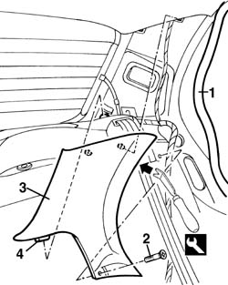
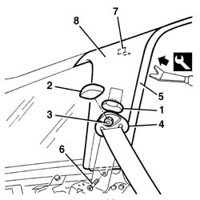
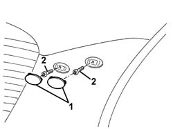
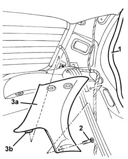

7040H42 rear pillar trim - r r
- Path
- Procedures > 70 FITTINGS > 7040 BODYSHELL INTERIOR TRIMS AND FITTINGS > 7040H roof panel lining > 7040H42 rear pillar trim - r r
- Kind
- repair procedure (removal / refitting; the operation number is the code)
- Applies to
- all engines; all production periods
- Interactive page
- https://sloeber94.github.io/elrnDB-a156/en/#/3238844
Applies to: all engines; all production periods
 Removing
Removing
 Refitting
Refitting1. Remove the door housing seal in the area of the pillar cover.
2. Unscrew the bolt.
3. Remove the pillar cover from the retainers using the special tool.
 | Name | Country |
|---|---|---|
3 | Scraper blade | 1.823.015.000 |
4. Remove the trim, releasing its lower guide from the housing in the rear parcel shellf.

Applies to: all engines; all production periods
Refitting
RemovingCheck that the trim is undamaged.
Position the lower guide for the trim in its housing in the rear parcel shelf.
Fit the pillar cover on its retainers.
Tighten the bolt.
Fit the door housing seal.
Applies to: all engines; all production periods; only with equipment: Station Wagon
Removing
Refitting7040B22 luggage compartment/load platform moulding - r+r
7040B15 (One), rear side trim mounting BRACKET left or right - R.R .
7040B28 PET transport PROTECTION and load carrying compartment COVER COMBINATION BLIND - R.R.
- 7040L44 rear compartment scuff strip - r r
7050A47 SIDE PANEL (one) for rear seat BACKREST., left or right - R.R .
7040B30 l/h or r/h side support (one) for load platform cover blind - arrange
1. Remove the grip.
2. Remove the embellishment.
3. Undo the nut.
4. Move the seat belt relay.
5. Remove the door housing seals near the pillar trim.
6. Undo the trim fixing bolt.
7. Release the inner retainer using the special tool.
| Name | Country |
|---|---|---|
1 | Scraper blade | 1.823.015.000 |
8. Recover the pillar trim.

Applies to: all engines; all production periods; only with equipment: Station Wagon
Refitting
RemovingCheck that the pillar trim is not damaged.
Position the pillar trim and engage the inner retainer.
Tighten the bolt fixing the trim.
Fit the door housing seal by the pillar trim.
Fit the seat belt relay.
Tighten the nut.
 | Fastening | Component | Ø | Value (daNm) |
|---|---|---|---|---|
- | Nut | REAR SEAT BELT IDLER | - | 4.0 |
Fit the trim.
Fit the grip.
7040B30 l/h or r/h side support (one) for load platform cover blind - arrange
7050A47 SIDE PANEL (one) for rear seat BACKREST., left or right - R.R .
- 7040L44 rear compartment scuff strip - r r
7040B28 PET transport PROTECTION and load carrying compartment COVER COMBINATION BLIND - R.R.
7040B15 (One), rear side trim mounting BRACKET left or right - R.R .
Applies to: all engines; all production periods; only with equipment: Head Bag
Removing
Refitting1. Remove the covers, taking care not to damage the trim.
2. Undo the bolts fixing the pillar trim.

Applies to: all engines; all production periods; only with equipment: Head Bag
1. Remove the door housing seals near the pillar trim.
2. Unscrew the bolt.
3. Remove the trim (3a) releasing the lower guide (3b) from the housing in the rear parcel shelf.

Applies to: all engines; all production periods; only with equipment: Head Bag
Refitting
RemovingCheck that the trim is undamaged.
Position the trim engaging the lower guide in the housing in the rear parcel shelf.
Tighten the bolt.
Fit the door housing seal.
Tighten the bolts fixing the pillar trim.
Fit the covers.
Topics linked from this page (6)
- 7040B15 (One), rear side trim mounting BRACKET left or right - R.R .
- 7040B22 luggage compartment/load platform moulding - r+r
- 7040B28 PET transport PROTECTION and load carrying compartment COVER COMBINATION BLIND - R.R.
- 7040B30 l/h or r/h side support (one) for load platform cover blind - arrange
- 7050A19 rear seat squab - r r
- 7050A47 SIDE PANEL (one) for rear seat BACKREST., left or right - R.R .
Topics that link to this page (18)
- 5505C41 cabin wiring - r r
- 5570T28 ecu for car radio aerial in rear window heater element - r+r
- 5570T31 aerial coaxial lead - r r
- 5580T08 AMPLIFIER for Bose sound diffusion system' - R.R.
- 5580T30 Bose sound system' SUBWOOFER - R.R.
- 7030B12 sliding roof (assembly) - r+r
- 7030B46 sun roof cables , one , lh or rh - r r
- 7030B50 sun roof guide , one , lh or rh - r r
- 7035C10 Third SIDE WINDOW (one), left or right (bonded type) - R.R. - Includes. cleaning edges of window and housing in bodyshell
- 7035C14 fixed rear side window one lh or rh r r includes cleaning of housing
- 7040H10 roof panel lining - r r
- 7040H16 roof panel lining - r r
- 7040H62 rear window surround trim one lh or rh r r
- 7040H80 parcel rack
- 7065B10 l/h or r/h rear safety belt (one) - r+r
- 7065B28 Rear seat belt HEIGHT ADJUSTER , (one), left or right - R.R.
- 7095B66 TAILGATE LEFT integrated WIRING - R.R.
- 7095B68 TAILGATE RIGHT incorporated WIRING - R.R.